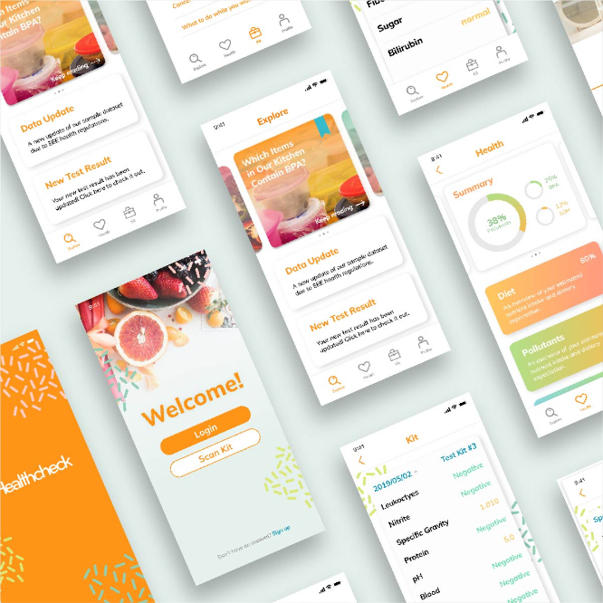

Retail Automation Tool
Streamlining the retail team's workflow
Streamlining the retail team's workflow

Healthcheck
Tracking urinalysis test
Tracking urinalysis test
hihi, I’m Grace!
As a product designer, I’ve designed experiences for retail and fintech.
I’m biased towards action and enjoy a collaborative and iterative design process while remembering to take a minute to sip hot water. Outside of work, I’m an experimental chef, avid reader, frugal minimalist, and digital painter.
you can contact me through Gmail, check out my LinkedIn or Insta.